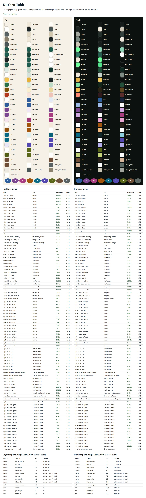
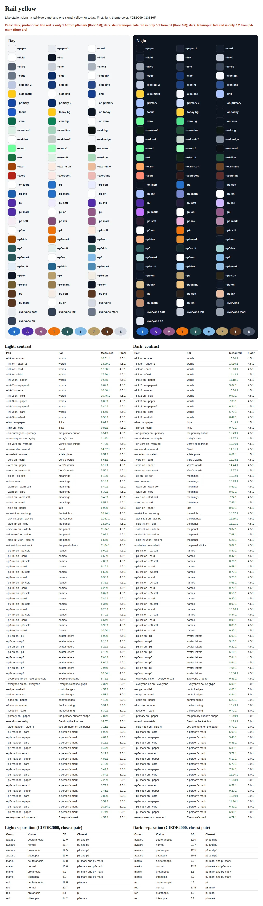
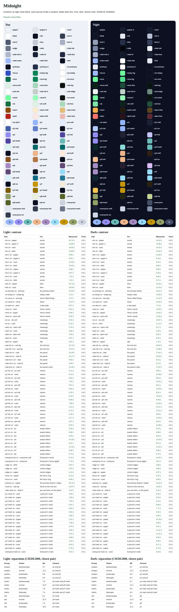
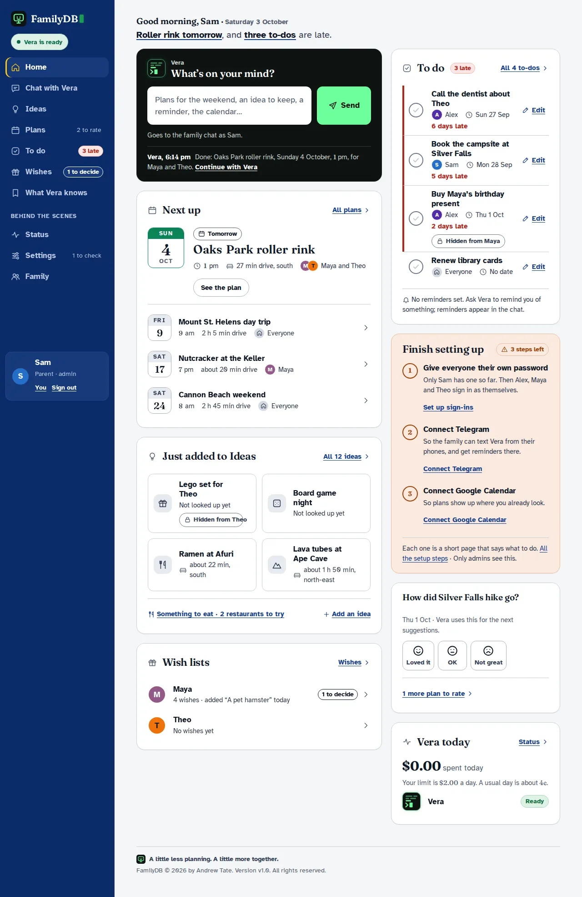
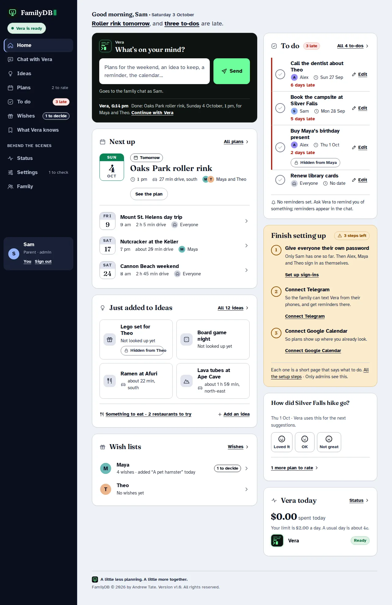
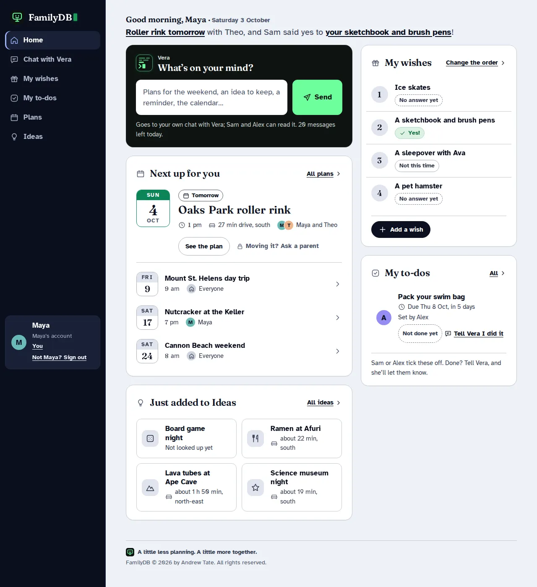
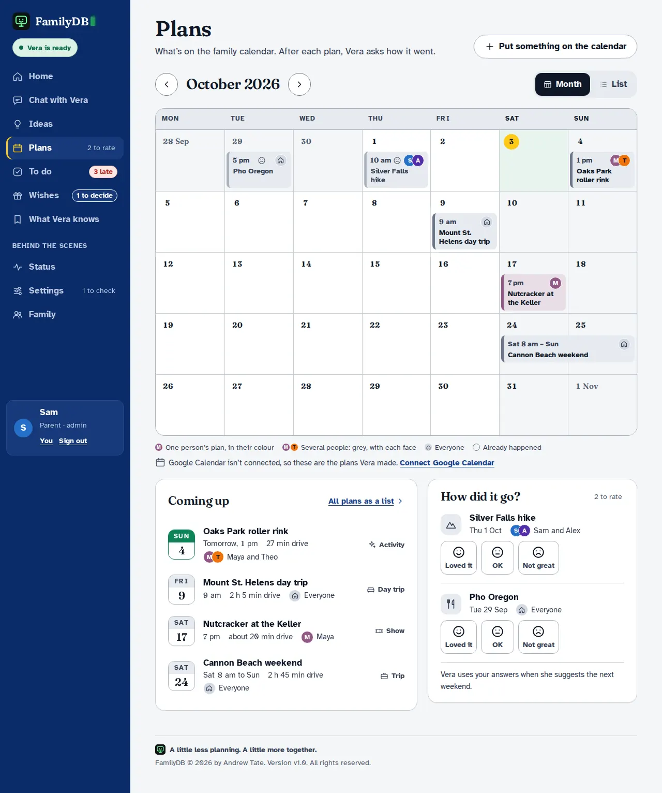
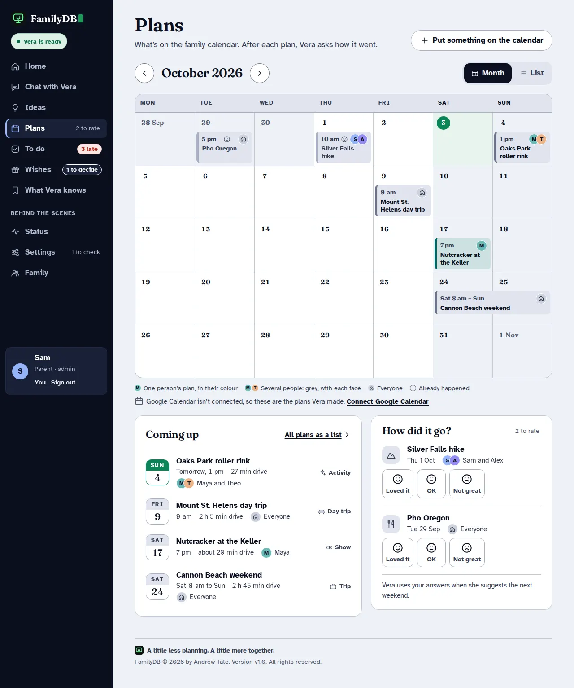
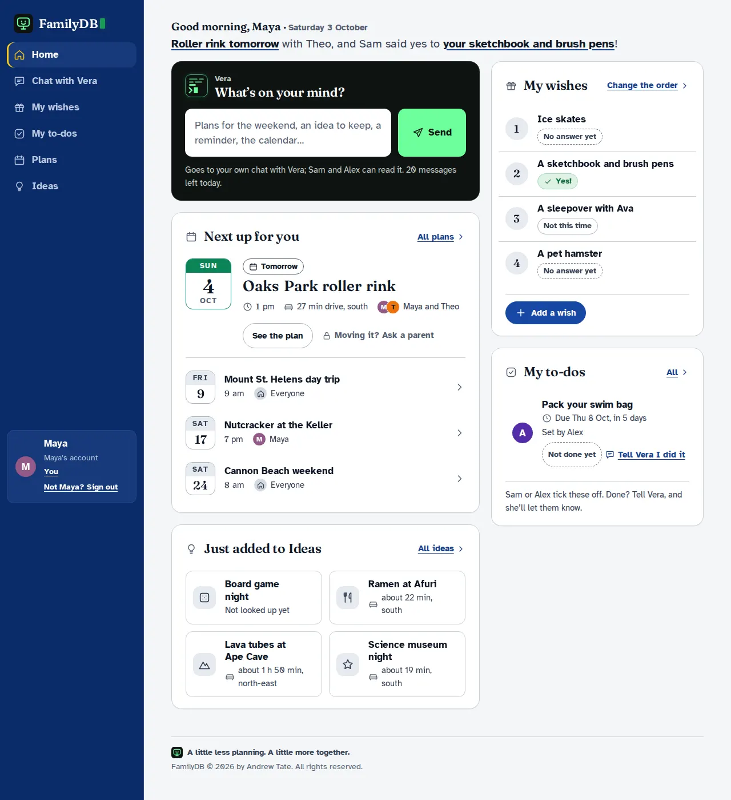

Kitchen Table, the whole app
Every page of FamilyDB in the design you chose, drawn from the app’s real pages and words, ready to build. Your notes are in: no starter buttons on Ask Vera, a small greeting so Ask Vera, Next up and To do share the first screen, and the green-screen touches kept as they were. Every colour now lives in one theme file, so other themes can be added later.
57 pages4 views of each: desktop, phone, day, night13 small pull requests to build it8 questions for the family
Everyday 15


A kid’s pages 6


Signing in and people 7


Behind the scenes 12


Setting up a new install 11


States, errors and type 6


Built for themes proof
Every colour now lives in one theme file. Two earlier palettes were ported only to test that: their colours moved into the new names, not redesigned. Rail yellow fails the colour-blind check at night, which is the test doing its job.









Questions for the family before building
- Kitchen Table’s people colours under colour blindness. Theo’s ochre and an unused slot’s olive look alike to some colour-blind eyes, and late red sits close to Theo’s ochre. Retune three slots, or accept it (names are always beside the colours)?
- The two test themes. Ship Midnight as it is (it passes), fix Rail yellow’s night red first, or design themes properly later?
- Status for parents. The design shows it to admins; the app shows it to every grown-up. Which?
- “Hidden from Maya.” Name exactly whom a present is hidden from (one new column), or keep “hidden from the kids”?
- A parent opening Settings. The friendly “for grown-ups” page kids get, or the plain refusal?
- To-dos. Their own Edit page, as drawn, or keep editing in a fold on the row?
- “Set by Alex.” Remember who set each kid’s to-do from now on?
- Setup’s word “installer”. Keep it, or say “the password FamilyDB started with”?
And from earlier: should each person be able to pick their own theme, and may kids? The design draws both as yes.
The handoff: how to build it
This is for the engineers who will build the Kitchen Table design into src/familydb/web/. Everything here was checked against the app's own code in app-reference/ (templates, views.py, routes.py, settings.py, setup.py, status.py, fields.py, family.py, auth.py, chat.py, edits.py, roles.py). Where this folder and the app disagree on what a page says or does, the app wins. Where they disagree on how it looks, this folder wins.
What's in this folder
| Here | Goes to | What it is |
|---|---|---|
style.css |
static/style.css |
the one stylesheet: base, shell, components, pages, phone, forced colours |
themes/kitchen-table.css |
static/themes/kitchen-table.css |
the default theme: every colour token, by day and by night |
themes/rail.css, themes/midnight.css |
not shipped yet | two test ports that prove the theme contract (see Themes) |
fonts/*.woff2 (8 files) |
static/fonts/ |
Atkinson Hyperlegible 400/700, Fraunces SOFT 600, Fraunces figures (2 subsets × 2 weights), JetBrains Mono 400 |
brand/ |
static/brand/ |
favicon (SVG, 32, 16), apple-touch-icon, 512 icon, mark sources |
icons.svg |
static/icons.svg |
the icon sprite (#i-name), replacing the Lucide one |
_kit/theme-check.py |
tests/test_themes.py (as a test) |
contract, contrast and colour-blind checks for every theme file |
STYLE-draft.md |
docs/STYLE.md |
the design notes, as they will stand once built |
STANDARD.md |
(reference) | every component, token, rule and check, with class names |
CHANGES.md |
(reference) | why each thing is the way it is, stage by stage |
*.html (57 pages), theme-test/*.html, palette/*.html |
(reference) | the mockups; the two test themes on Home, Plans and a kid's Home; a palette sheet per theme |
shots/ |
(reference) | every page at 1280 and 390 px, light and dark; shots/themes/ for the test themes and palette sheets |
The mockups are static: no scripts, no inline styles, every icon inline (only because file:// blocks an external <use>). They are generated, so the markup of one component is the same on every page.
1. Page map
Every mockup → its real template, route and view
R = the mockup replaces the template's markup. S = a state of a template another mockup also draws. N = new. D = a design sheet, not a page.
| Mockup | Real template | Route → view (context builders) | |
|---|---|---|---|
home.html |
home.html |
/ → routes.home (agenda.read, task_store.list_all, chat.glance, wish_glance, status.setup_steps; views.entry_row, task_brief, idea_row) |
R |
home-kid.html |
home.html |
the same, for a kid (visitor().may(...)) |
S |
chat.html |
chat.html + _ask.html |
/chat → chat.show (chat.page, views.chat_line, chat.standing, chat.box) |
R |
chat-kid.html |
chat.html |
the same, her own chat (my_chat) |
S |
ideas.html |
ideas.html |
/ideas → routes.ideas (idea_store.search, views.idea_row, places_radar, away_from_home) |
R |
restaurants.html |
restaurants.html |
/restaurants → routes.restaurants (views.restaurant_card) |
R |
idea.html |
idea.html |
/idea/<id> → routes.idea (idea_row, place_panel, outcome_row, plan_row) |
R |
idea-new.html |
idea_form.html |
/ideas/new → routes.new_idea (_idea_form) → POST edits.add_idea |
R |
idea-edit.html |
idea_form.html |
/idea/<id>/edit → routes.edit_idea → POST edits.edit_idea |
S |
plans.html |
plans_month.html |
/plans/month → routes.plans_month (views.month_weeks) |
R (the names swap: the mockup "plans" is the month) |
plans-list.html |
plans.html |
/plans → routes.plans (agenda.read, entry_row) |
R |
todo.html |
tasks.html |
/tasks → routes.tasks (task_store.list_all, views.task_row, REPEATS) |
R |
todo-kid.html |
tasks.html |
the same, a kid's own (_own_only) |
S |
todo-edit.html |
tasks.html (its inline edit fold) |
none today | N: add GET /task/<id>/edit → task_form.html, or keep the edit as a fold on the row |
wishes.html |
wishes.html |
/wishes → routes.wishes (_kids, _lists, views.WISH_LISTS, wish_row) |
R |
wishes-maya.html |
wishes.html |
/wishes?who=<id> |
S |
wishes-kid.html |
wishes.html |
the same, a kid | S |
memory.html |
memory.html |
/memory → routes.memory (views.memory_page) |
R |
status.html |
status.html |
/status → routes.status (status.status()) |
R |
activity.html |
activity.html |
/status/activity/<key> → activity.show (not in app-reference/) |
R |
family.html |
family.html |
/family → family.show |
R |
member.html |
member_form.html |
/family/<id> → family.edit |
R |
password-shown.html |
member_form.html (made) |
after POST family.sign_in_for |
S |
you.html |
you.html + own_password_form.html |
/you → family.you (own_form) |
R, plus "How it looks" |
you-kid.html |
you.html |
the same, a kid | S |
you-first.html |
you.html (own.temporary) |
/you after a starting-password sign-in |
S |
signin.html |
login.html |
/login → auth.login |
R |
403.html |
403.html |
auth._within_reach → REFUSALS[perm] |
R |
grownups.html |
403.html |
the same with REFUSALS["manage"] for a kid |
S |
404.html |
404.html |
abort(404) |
R |
more.html, more-kid.html |
base.html's details.menu |
none today | N: GET /more → more.html, the phone account page |
settings.html |
settings.html |
/settings → settings.show (overview()) |
R |
settings-<name>.html (9) |
settings_section.html + settings/<name>.html |
/settings/<name> → settings.section / settings.personality (page(), PAGES[name]) |
R; General gains "How it looks" |
setup.html |
setup.html |
/setup → setup.overview |
R |
setup-<step>.html (7) |
setup_step.html + setup/<step>.html |
/setup/<step> → setup.step (PAGES[step]) |
R |
setup-telegram-link.html |
setup/telegram.html, stage link |
the same | S |
setup-told.html |
setup/model.html + setup_told.html |
the model step after a refused key | S |
setup-done.html |
setup_done.html |
/setup/done → setup.done |
R |
states.html, states-actions.html, states-content.html, type.html |
none | none | D |
Replaced, merged, new. Every page template is replaced in place; none is merged away. The partials become macros (section 2):
- _ask.html becomes a composer() macro.
- setup_told.html becomes told().
- _company_cards.html and _key_steps.html stay includes, with new markup.
- own_password_form.html and password_form.html stay.
New templates:
- more.html (the phone account page);
- task_form.html, if to-dos get an edit page.
Nothing is deleted.
Real states not drawn (build them from the components):
- a parent reading a kid's chat;
- family.html with knocks (drawn on setup-family.html);
- the Telegram setup stages connecting, refused, nobody and linked;
- Google's consent and calendar choice;
- Personality's drift and Restore;
- a revealed key;
- the shared-password shell.
What the mockups show that the app can't produce today
Each item names the smallest server change. Paths are under src/familydb/.
- A person's colour slot (
.p0–.p8on avatars, bubbles, calendar events, owners). Members have no slot. - Change: migration
members.slot INTEGER.family.addassigns the lowest free 1–8, and existing rows are backfilled in id order. - Expose it in
family._person, and addviews.slot_of(name, people), which gives 0 for Everyone or nobody. - Lists that carry only names (
idea.participants,task.owner, chat lines) get a name→slot map, built once per request frommember_store.list_all. - Theme and light/dark (
data-theme,data-modeon<html>). Nothing exists yet. See Themes, "What the app must store". - The health pill ("Vera is ready", "Vera is writing back", "Vera is resting until midnight", "Vera can't answer right now", and "Can't answer yet" during setup).
- Change: add
status.pill(app, conn, chat_id) -> (state, words). It is built from:status.light;chat.standing("thinking" → busy);spent_todayagainstdaily_spend_limit(rest);ready_to_answer(down during setup).
- The context processor passes it to grown-ups only. Kids never get it.
- Nav badges ("3 late", "1 to decide", "2 to rate", "1 to check").
- "3 late": a context-processor count of open tasks due before today (
_own_onlyfor kids). - "1 to decide":
len(wish_glance(...).waiting). - "2 to rate": a new query, "plans in the last 14 days whose idea has no outcome dated after them". The follow-up job already selects these.
- "1 to check": move
settings.overview's look flags intosettings.needs_look(app, conn). - The phone avatar's dot means any of these is non-zero.
- Home's greeting and its useful line:
- "Good morning, Sam · Saturday 3 October";
- "Roller rink tomorrow, and three to-dos are late", with links.
- Change:
views.greeting(hour, name)andviews.home_line(coming, late_count), which returns the parts and their links.late_countmust count every open task, not only the four shown. - The next plan's drive time ("27 min drive, south").
views.away_from_homeexists but only Ideas uses it. - Change: in
home()andplans(), load the idea's place for entries with anidea_idand addaway. - Who a plan is for. Agenda entries carry no people.
- Change:
entry_row(entry, today, people=idea.participants)→who: [{name, slot}]. Google-only entries get Everyone. - A kid's "Next up for you" filters to entries that name her, or that name nobody.
- Month calendar placement (
.c1–.c7,.lane1–.lane3,.len2). - Change:
views.month_weeksaddslaneandlenper event; the column is the loop index. - "Hidden from Maya" on a present. Gifts are hidden from every kid today, and no single person is named.
- Change: render "Hidden from" with the kids' names from
_kids(conn). That is true today and needs no schema. - Naming exactly one person needs
ideas.hidden_from. That is a family question (see the open questions). - "Set by Alex" on a kid's to-do. Tasks don't record who made them.
- Change: migration
tasks.created_by_member_id, set inedits.add_taskand in the chat tool. Without it, drop the line.
- Change: migration
- "N days late", "Was due Sun 27 Sep":
views.late_words(due, today), used by bothtask_rowandtask_brief. - A kid's messages left today ("5 messages left today").
calls.answered_forexists, but only Family uses it.- Change: compute
leftinchat.page, and inhome()whenroles.daily_limited.
- Change: compute
- "Earlier messages" (
?before=<id>): addbeforetomessage_store.last_for_chatand tochat.show. - Faces on "How did it go?": map Loved it / OK / Not great to ratings 9 / 6 / 3 in
edits.record_outcome. Use the same query as item 4. - Names on the Ideas radar's dots: add
title/shortto each blip inviews.places_radar. - Status's "How each part is doing":
status.health(app, conn) -> [(area, state, words, action)]. The pill (3) and the settings flags (4) read the same function, so they can't disagree. - Home's "Vera today" card: pass
spent_todayand the limit tohome()for grown-ups. "A usual day" is the 30-day total divided by the days that had calls.
No body class for roles is needed: the shell decides each nav item with visitor().may(...), as it does today.
2. Components → macros
The class names in STANDARD.md §2 are the API, and each component becomes one macro. Existing macro names are kept where the job is the same.
Changed macros (_ui.html)
| Today | Becomes | Parameters | Emits |
|---|---|---|---|
icon(name, label=none, cls='') |
icon(name, label=none, cls='', size='') |
size='sm'\|'lg' by keyword |
svg.icon[.icon--sm]. The sprite's names change: bulb, cal, chev, chevl, sliders, pulse, todo, memory replace idea, plans, right, settings, status. Add a mic symbol for dictate.js |
presence(cls, variant) |
vera_screen(size='', state='') |
size sm/`/lg/xl; statebusy/off` |
svg.vs from the geometry table in STANDARD.md §9 |
chip(parts, today) |
date_tile(parts, now=false, size='') |
as views.date_chip |
span.dt[--now/--sm/--lg] > .dt__wd .dt__d .dt__m (weekday first) |
crt(cls, hidden) |
pane(cls='', center=false) + caller |
section.pane[--center]: 403, 404, you-first, the brand rows |
|
radar(blips, rings) |
radar(blips, rings, wide=true) |
svg.radar[--wide/--narrow] inside .instrument__pane; Ideas only |
|
page_head(title, lede, glyph, crumbs) + caller |
page_head(title, lede=none, crumb=none, overline=none) + caller |
crumb (words, href) |
a.crumb then div.page-head > div(h1, p.lede) + .head-actions |
chat_line(line, anchor) |
msg(line, anchor=none) |
div.msg.msg--vera / .msg--person.p{slot}[.msg--mine/--system/--failed] > avatar or vera_screen + .msg__bub > .msg__by |
|
waiting_line(name, state, text) |
msg_pending(name, state, text) |
.msg--pending[role=status] with the visible "Check for her answer" link |
|
tick(task_id, revision, title, back) |
the same | form > button.tick[aria-label="Mark done: …"] > span > icon; without change the row becomes .todo--ro |
|
kind_label(kind) |
the same | .kind: the icon and the word, with no colour class |
Changed (_settings.html, _ask.html)
| Today | Becomes | Notes |
|---|---|---|
box(entry) |
setting(entry) (keep box as an alias for a release) |
.setting[--bad] > .setting__head (label.field__label + .changed) + control + .field__hint/.field__error#h-KEY. The pick-or-type box becomes .pick > select + .pick__another (ids and names unchanged: a-KEY, KEY_another) |
group(entry) |
the same name | section.card.sgroup > h2.sgroup__h, p.sgroup__note, .sgrid; folded details.card.fold.sgroup > summary(h2, .changed "N changed", chev) + .fold__body |
form(section, groups) |
the same name | form.sform, then the groups, then save_bar() |
grouped_options |
unchanged | |
_ask.html (include) |
composer(viewer, state, where='home'\|'chat') macro, in the same file |
keeps the script hooks (section 4) |
New macros
In _ui.html, as named in STANDARD.md §8:
- card(title=none, icon=none, more=none, foot=none, tone='', id=none) + caller
- banner(tone='', size='', icon=none) + caller
- flash(message, undo_url=none) (replaces base.html's p.said loop)
- error_summary(errors)
- tag(state, words, icon=none, more=none)
- badge(kind, n, word)
- health_pill(state, words, short)
- avatar(person, size=''): emits span.av.p{{ person.slot }}, with the house icon for slot 0
- brand_mark(size='') and wordmark()
- tile(icon, tone='', size='')
- item(lead, title, meta, trail=none, href=none, mod=''): base.html's nav item becomes nav_item to free the name
- todo(row, viewer, compact=false, back): picks --late, --done or --ro from the viewer's role
- rank(wish, viewer)
- idea_card(idea, viewer)
- field(name, label, kind='text', value='', hint=none, error=none, required=false, dictate=false)
- choices(name, options, required, kind='radio', value=none)
- disclose(summary, open=false)
- fold(title, open=false, danger=false, id=none)
- fieldfold(title, open=false)
- mini_fold(label, danger=false)
- seg(label, links)
- faces(plan)
- empty(title, text, action=none, center=false)
- locked(words)
- note(words)
- privacy(words, room=false)
- srow(href, lead, title, lines, trail=none)
- tool_call(call)
- shown_once(name, password)
In _settings.html:
- save_bar(label='Save', still=false)
- told(said, problems) (replaces setup_told.html and the settings pages' p.said/p.error)
- settings_nav(sections, current)
- line_setting(entry) (Her lines)
- theme_picker(themes, chosen, name, in_use=none, family=none)
- mode_picker(value, name, legend, hint)
In page templates:
- plan(plan, cancellable) (was plan_line)
- ev(entry) and calendar_week(week) (was event)
- place(row)
- mem(row)
- wlist(kid, list, full)
- wish_card changed
- auto(row) (settings/messages)
- setup_progress(steps, current)
- todo_adder(people, errors) (was fields)
page(), the shell, stays base.html: blocks for title, head, body class and content, plus nav_item(label, href, section, icon, badge=none) and tab(...). STANDARD.md's "Person picker" isn't built: sign-in never lists the family.
3. The stylesheet
style.css replaces static/style.css whole. It is not a patch: the current file ("Phosphor", dark only, DM Sans, DM Mono, VT323) shares almost nothing with it.
Sections (in order): 1. Fonts 2. Tokens: the fixed layer only, see below 3. Base 4. Shell 5. Components (5.1 Card … 5.26 States, then the stage 8 and 9 components) 6. Pages 7. Phone (≤ 820 px) 8. Forced colours
Section 9 has the settings, setup and theme picker parts.
Tokens, in two layers.
- style.css holds what is the same in every theme:
- type (--font-*, --t-*);
- space (--s1–--s8), radii (--r-*) and sizes;
- the brand, which the family fixed: --glass*, --phosphor*, --cursor*, --vs-halo, --mark-glass, --glass-scan;
- the white rules on Vera's always-dark Ask box: --ask-rule, --ask-fill, --ask-fill-2.
- themes/<name>.css holds every colour. Components use only these semantic tokens, and no component names a raw colour.
Audited. No literal colour remains in style.css outside the token block. The mark's colours moved out of the markup too. Every literal that was there, and its fix:
| Where | Was | Now |
|---|---|---|
.av, .av > .icon, .dots i |
#FFFFFF letters |
var(--p-on), set per slot by .p0–.p8 from --pN-on / --everyone-on (Rail and Midnight use dark letters on light avatars) |
.ask__last rule |
rgba(255,255,255,.16) |
--ask-rule |
.ask textarea:disabled, .composer__send:disabled |
rgba(255,255,255,.12/.18) |
--ask-fill, --ask-fill-2 |
.pane::after scanlines |
rgba(0,0,0,.14) |
--glass-scan |
.tabbar shadow |
rgba(60,45,20,.5) |
--shadow-up (a theme token: Kitchen Table's is warm brown) |
.ask .starter* |
three white literals | deleted: the starters left the Ask card in stage 8 |
| the FamilyDB mark SVG | fill="#0E1312" stroke="#6DFF9C" in the markup |
.mf__bg / .mf__fg classes reading --mark-glass / --phosphor |
| the theme previews | 10 blocks of preview colours | gone: each preview half carries data-theme and data-mode and reads that theme's own tokens |
--sun, --sun-2, --on-sun |
named after a colour | renamed --send, --send-2, --on-send: the token's only job is the Send button |
--info, --info-soft, --info-line |
defined, never used | deleted |
--vera-bg-2 |
defined, never used | deleted |
What's dead in the current stylesheet: all of it once this lands, about 290 classes. Watch for names that survive with a new meaning: a stray old rule or template would collide.
- .places was the main nav; it is now the restaurant list.
- .tools was the household nav; it is now the activity page's list.
- .said was the flash <p>; it is now a quoted message (blockquote).
- .radar, .thread, .ask (the <form> is now .composer), .kind, .more, .meter, .tick, .page-head, .brand, .card, .tag, .empty, .foot, .steps and .wish/.wishes are all rewritten.
- The body classes in-{section} and to-{section}, and the kind colours kind-*, go: colour is per person now.
- .starters stays in style.css for one empty-state button on the states sheet. Remove it if that isn't built.
Fonts (static/fonts/, about 125 KB). They are referenced relative to the stylesheet, so they go next to it:
- atkinson-400.woff2, atkinson-700.woff2
- fraunces-soft-600.woff2
- fraunces-figures-regular.woff2, fraunces-figures-bold.woff2
- fraunces-text-figures-regular.woff2, fraunces-text-figures-bold.woff2
- jetbrains-mono-400.woff2
DM Sans, DM Mono and VT323 go.
Brand (static/brand/): favicon.svg, favicon-32.png, favicon-16.png, apple-touch-icon.png, icon-512.png (the manifest's), and the mark-16.svg / mark-512.svg sources. They replace static/favicon.svg and static/apple-touch-icon.png; scripts/icons.py no longer draws them.
The head of base.html:
<html lang="en-GB" data-theme="{{ look.theme }}" data-mode="{{ look.mode }}">
<meta name="color-scheme" content="{{ look.color_scheme }}"> {# "light dark", "light" or "dark" #}
<meta name="theme-color" content="{{ look.theme_color[0] }}" media="(prefers-color-scheme: light)">
<meta name="theme-color" content="{{ look.theme_color[1] }}" media="(prefers-color-scheme: dark)">
<link rel="preload" href="{{ url_for('static', filename='fonts/atkinson-400.woff2') }}" as="font" type="font/woff2" crossorigin>
<link rel="preload" href="{{ url_for('static', filename='fonts/fraunces-soft-600.woff2') }}" as="font" type="font/woff2" crossorigin>
<link rel="stylesheet" href="{{ url_for('static', filename='style.css') }}">
<link rel="stylesheet" href="{{ url_for('static', filename='themes/' ~ look.theme ~ '.css') }}">
<link rel="icon" href="{{ url_for('static', filename='brand/favicon.svg') }}" type="image/svg+xml">
<link rel="icon" href="{{ url_for('static', filename='brand/favicon-32.png') }}" sizes="32x32" type="image/png">
<link rel="icon" href="{{ url_for('static', filename='brand/favicon-16.png') }}" sizes="16x16" type="image/png">
<link rel="apple-touch-icon" href="{{ url_for('static', filename='brand/apple-touch-icon.png') }}">
Only Atkinson 400 and Fraunces 600 are preloaded, because every page uses them for body text and the h1. The figure and mono subsets are small and used on some pages only.
4. Rules kept
Content security policy. default-src 'self'; style-src 'self'; script-src 'self'; font-src 'self'; img-src 'self' data:; form-action 'self'; frame-ancestors 'none'.
- No style="", no inline <script>, no on*=. Data-driven geometry uses SVG presentation attributes, which CSP allows: the spend meter's rect width, the radar.
- Calendar placement uses classes. Themes are stylesheets chosen by attributes (see Themes), so nothing is ever computed into a style.
- Add a CI check that fails on style=" or an inline <script> in templates/.
Scripting off. Every page reads, and every form works, with no script.
- The pattern is POST → redirect → GET, with a flash in the session and an #anchor back to what changed.
- <details> handles filters, options and fine-tuning, opened server-side when one holds an error or an active filter.
- Chat opens at the newest message (column-reverse).
- While a reply is pending, a short meta refresh backs off: 3 s, then 5, then 10, and stops at 60 s.
- The theme pickers are radios and a Save.
The existing scripts. Keep the app's four and give them the hooks below. Don't write the four that STANDARD.md §8 names: their jobs are already in ask.js, apart from the optional password.js.
| Script | What it needs from the new markup |
|---|---|
ask.js |
id="ask" on form.composer (not on Home's section.ask); data-refresh on it; textarea[name=text] with id="text" (the mockups' ask-text/msg are placeholders, so keep text); the hidden lat/lon inputs; the hidden #locate box with input[name=send_where], labelled "Share where I am with this message"; p#where; id="latest" on the last .msg. It reads .msg--pending and .msg--vera, no longer li.pending and .said-bot. Its starter code goes dead (?ask= still prefills). The kid's "Tell Vera I did it" must use ?ask=…#ask, not the mockup's ?draft=…#msg |
menu.js |
retired. The details.menu is gone: the desktop has the sidebar and its account corner (.me), and the phone's avatar links to /more |
wishes.js |
ol.wishes[data-list], li.wish[data-wish][data-rank]. The handle is .rank__n, the move form form.wish__move, the actions .wish__acts: change the selectors, or keep the old class names alongside. Every form keeps hidden(kid) (csrf, once, kid). Add CSS for .can-drag .rank__n (44 px, touch-action: none) and .wish.dragging |
dictate.js |
data-dictate on the same boxes as today (the mockups leave it out); each such box sits directly inside its .field; span.mic-slot#ask-mic in .composer__row before Send; an i-mic symbol in the sprite; the <script data-icons> in the head. New CSS for button.mic: 44 px, --edge border, phosphor while .listening (it is live), no motion under reduced motion |
Accessibility: measured, and kept (STANDARD.md §7 has every pair).
- Words are AA: body text 13.9:1 by day, 15.7 at night; the quietest text, --ink-3 on the sidebar, is 5.1.
- Controls are 3:1: field edges 3.9, the primary button against the page 6.9 / 3.5.
- Avatar letters are 5.4–7.4.
- Phosphor on glass is 14.7. The focus ring is 3 px: ink on paper, phosphor on glass, the panel's ink on the panel.
- Targets are 44 px. Type is 14 px or more (13 px only for tab labels and overlines), in rem.
- Nothing is told by colour alone: late says "6 days late", tags carry words, events carry spoken labels.
- Nothing blinks for more than five seconds. The wordmark cursor blinks twice: its animation had a typo (2te) that stopped it altogether, and that is fixed. prefers-reduced-motion stops everything.
- forced-colors gives every selected state a real border.
- No sideways scrolling at 320 px or 200 % zoom.
- _kit/theme-check.py now measures the colour pairs for every theme.
Kids: - Kids never see costs, models or workings: no health pill, no Status, no money, no setup, no "used …" lines. - A kid's footer has no version number. - Kids see only their own chat and their own to-dos. - A page their role can't reach shows a kind refusal in the real words.
Presents:
- Presents stay hidden from kids: no row, no count, no greyed item.
- Grown-ups see them tagged "Surprise · hidden from …".
- Counts are taken after filtering (visible_to(viewer)).
5. Words for views.py and the templates
Only deliberate wording changes are listed. The sample family (Sam, Alex, Maya, Theo, every idea, time, price and count) is data.
Throughout
- "the bot" → {{ assistant }} (Vera), wherever the family reads it: ROLE_WORDS["kid"], AGENDA_NOTES, ALERT_TITLES["calendar"], the Family and member pages, the empty states.
- fields.py's help for kids' wishes ("something the bot said no to") still says "the bot": change it too.
- Contractions in page text: "There is nothing" → "There's nothing", "does not" → "doesn't", "is not connected" → "isn't connected", "I am sure" → "I'm sure", "anything you would ask" → "anything you'd ask".
- British spelling: "Organize" → "Organise", "neighborhood" → "neighbourhood".
- A kid is "her" or "his" by the gender on her record, never "them": "Take her password away", "Linking her Telegram", "She signs in as Maya…".
- No arrows in buttons: setup's "← Back" / "Next →" / "Skip for now →" / "Skip this →" / "Carry on: X →" / "Start →" lose them; the icon draws the chevron.
- <span class="optional">optional</span> → "(optional)" / "(required)" written into the label.
- Tags in sentence case:
- setup: "Done", "Needed", "Recommended", "Optional";
- Family: "Admin", "Parent", "Kid", "Age 41", "Signs in", "Starting password".
Shell
- Skip link: "Skip to the page" → "Skip to content", and its target #content → #main.
- Nav: "{assistant}" / "Chat" → "Chat with Vera" (tab bar: "Chat"); "Memory" → "What Vera knows"; a "Behind the scenes" group for Status, Settings, Family.
- A kid's "To do" → "My to-dos".
- "Your password" → "You", in the corner, the menu and the page.
- The Status light ("Status: needs a look" ▲ / "not answering" ■) → the health pill:
- "Vera is ready" ("Ready" on the phone);
- "Vera is writing back";
- "Vera is resting until midnight";
- "Vera can't answer right now";
- during setup, "Can't answer yet".
- Phone menu page (/more): lede "Everything that isn't in the tab bar." A kid's: "Your other pages, and signing out."
- 404: <title> "Page not found"; eyebrow "404 · nothing on the radar"; "There's nothing at that address."
- 403 keeps REFUSALS. The readout becomes "403 · signed in Maya · role kid".
- A kid on Settings: "This part is for grown-ups" / "Settings, setting up and the family list are changed by an admin. There's nothing here you need to do: ask Sam if something here needs to change." It names the admins.
Home and Chat
- The h1 "What's on your mind?" loses its glowing span.
- New: "Good morning, Sam · Saturday 3 October" and the useful line (section 1, item 5).
- STARTERS / WEEKEND_QUESTION / TODAY_QUESTION no longer appear under the box. Keep WEEKEND_QUESTION for setup's "Ask …".
- Under the box:
- Home: "Goes to the family chat as Sam."
- Chat: "Writing as Sam".
- Shared password: the "From" picker, with no "who is asking?" option, so nothing is picked by default.
- "Send where I am" → "Share where I am with this message".
- "Open the conversation" → "Continue with Vera".
- Next up: "All plans", "See the plan", "After that", "3 more plans this month". Empty: "Nothing planned yet."
- To do card: "All 4 to-dos". Empty: "No to-dos. Tell Vera “remind me to call the dentist on Tuesday”, or add one on To do."
- "Lately added" → "Just added to Ideas".
- "The kids' wishes" → "Wish lists".
- A kid's "Next up" → "Next up for you".
- Chat: h1 "Chat with Vera". The kids' panel note gains "…the kids see a note saying so at the top of theirs."
Ideas and an idea
- Capture: "A restaurant, a food cart pod, a neighbourhood, a kids' outing, a special occasion, or just a direction to explore. Write it the way you'd say it; Vera organises it and says in the chat what she saved."
- Its button: "Organise in the chat". Its hint becomes the link "Or add an idea yourself".
- "Search" → "Search ideas". New: "All ideas, newest first", "12 ideas".
- Radar: "How far each idea is from home", "Show the map" (phone), ring labels "15 min, 30 min, 1 h, 2 h, 3 h" (PLACE_RING_LABELS).
- Empty: "No ideas yet. When someone says “we should try…”, Vera saves it here."
- Restaurants: "Details may be out of date"; "for {who}" → "{who}"; empty "Mention a new place to Vera in the chat and it appears here."
- Idea form:
- edit <title> and h1 "Edit #12" → "Change this idea", with "Idea #12" above;
- new idea <title> "Add an idea";
- labels "Title (required)", "Kind (required)", "Description (optional)", "Who it's for" ("Commas between them.");
- "Everything else · where, when, who, cost, how long".
- An idea: "The place", "Opening hours this week", "At a glance", "Looking it up", "Plan it again" (once it's been planned).
- Flashes:
- TICKED "Done: #N title." → "Ticked off: {title}." (with Undo once Undo exists);
- WISH_ANSWERED → "Answer saved: Yes to “{title}”. Maya can see it now."
To do and Plans
- "Things to do" → "To do", plus "4 open, 3 of them late."
- "Add something to do" → "Add a to-do"; "Save task" → "Add"; "For" → "Who's it for?"; "Notes" → "Notes (optional)".
- "New reminder / snooze until" → "New reminder or snooze until"; "Cancel pending reminder" → "Cancel the pending reminder".
- The reminder note: "Reminders appear in the chat while FamilyDB is running; they aren't phone notifications. With Telegram connected, they go there too."
- "Show" becomes the tabs "Open / Done / Cancelled / All". "Search" → "Search to-dos".
- AGENDA_NOTES["saved"]: "Google Calendar isn't connected, so these are the plans Vera made."
- Plans ledes:
- list: "What's on the family calendar for the next three months, and what happened lately."
- month: "What's on the family calendar. After each plan, Vera asks how it went."
- Month nav: "Earlier / Later" → icon buttons named after the months.
- "Move it", "Cancel it", "Yes, cancel it", "New time" and "Put it on the calendar" are kept.
Wishes, memory, family, you
- "A note for Maya (optional)".
- New: "Planning a present? Add it as a gift idea instead: wishes aren't secret…".
- "What {assistant} remembers" → "What Vera knows"; "Must", "A guess", "Until (optional)".
- New key: "How Vera weighs these".
- FORGOTTEN: "won't come back".
- Family:
- lede: "Who Vera talks to. Each person signs in as themselves, with a password of their own: open somebody to give them a starting password."
- "Change" → "Change {name}".
- "Asked to talk to the bot" → "Waiting to be let in".
- Member:
- lede "Kid · 11 · on the list";
- "Yes, Vera talks to her / No, switched off";
- "…she hasn't used yet";
- "I'm sure: take Maya off for good".
- Shown password: "Shown this once: send it to Maya now. She signs in as Maya with it, and chooses her own password straight away. Once you leave this page it can't be shown again; make a new one if it's lost."
- You:
- title and h1 "You". Lede "How FamilyDB looks for you, and how you sign in." A kid's: "How your screen looks, and your password."
- New: "How it looks for you" (a kid's: "How your screen looks"), "The family's theme: Kitchen Table", "Light or dark", "Light / Dark / Match this device", "Save how it looks", "Good to know".
- Settings › General gains "How it looks" (see Themes). Setup and settings keep fields.py, settings.py and setup.py word for word, apart from:
- the arrows;
- the tag case;
- "/settings" gains "Only an admin can change these.";
- the save bar's "An empty box uses the default it shows.";
- "Another model…" / "Another Telegram chat…".
- Status:
- lede "Is Vera working, and what is she costing? Checked when you opened this page.";
- the verdict line ("Vera is ready, and well under budget.") is composed by a new status.verdict();
- "Spent today", "Last 30 days", "Where the money went", "Technical details: which AI answers each job".
6. Order of work
Each step is one pull request that leaves the app working. Every PR runs the tests, the CSP check and tests/test_themes.py once it exists.
- Static files. Fonts, brand, sprite,
style.css,themes/kitchen-table.css, all side by side with the old ones and not yet linked. - Test: the files serve;
theme-checkpasses on Kitchen Table. - Theme plumbing.
- The two family settings and the member columns (see Themes).
- A context processor that resolves
look(theme, mode, color-scheme, theme-color). - The manifest reads it.
- Test:
data-theme/data-modeon<html>for an admin, a kid and a signed-out visitor; a member's choice beats the family's; an unknown theme name falls back to Kitchen Table. - The shell.
base.html: head, sidebar, account corner, top bar, tab bar, footer, flash.- The
/morepage;menu.jsretired. icon()withsizeand the new names.avatarwithmembers.slot(migration).- Test: the nav per role (admin, parent, kid),
aria-current, skip link, the footer without a version for kids, the CSP check. - Home, including:
composer()with theask.jshooks;views.greeting,home_line,late_words;- the health pill (
status.pill); - the kid's Home.
- Test: Home for each role; send with scripts off; no costs for a kid; no gifts for a kid.
- Chat:
msg,msg_pending,#latest, the refresh back-off, "Earlier messages". - Test: pending, then answered with scripts off; a kid sees only her own chat.
- To do and Plans:
todo,tick,todo_adder;- the month calendar (
month_weekslanes) and the list; - who a plan is for.
- Test: tick with scripts off;
aria-current="date"; "Move it" still in adetails. - Ideas, an idea, the idea form, Restaurants:
idea_card,kind_label, the radar with names. - Test: search and filters (GET); a gift hidden from a kid; the form's errors.
- Wishes and What Vera knows:
wish_cardwith thewishes.jshooks, the three lists, answers. - Test: move up/down with scripts off; drag with
wishes.js; answer a wish. - Family, member, You:
- "How it looks" on You (
POST /you/look); - starting passwords shown once;
- you-first.
- Test: a kid changes her own theme and nobody else's; the password flows.
- Settings:
setting,group,save_bar,told,settings_nav, every section page, and "How it looks" on General.- Test: save, an emptied box returns to its default, a complaint opens its fold, only an admin sees it.
- Setup: the overview, the steps, done, told.
- Test: each step's form posts and comes back with what it said; Telegram's refresh.
- Status and activity, 403, 404, sign-in.
status.healthandstatus.verdict.- Test: Status is grown-ups only (see the open questions); the refusal pages.
- Clean-up: delete the old stylesheet's leftovers, the
boxalias, the Lucide sprite and the old favicons. Landdocs/STYLE.mdfromSTYLE-draft.md.
7. Tests that will change
No tests are in app-reference/. STYLE.md and the code name four pins that change, and the rest is inferred from the markup the templates carry: search the test suite for each quoted string.
class="panel card"on list items →article.idea,article.place,li.wish,li.todo[.todo--late].class="said"as the flash →.banner.banner--ok.flash[role=status]; on settings and setup,.told > .banner--slim..saidnow marks a quoted message.<summary>Move it</summary>→details.mini-fold > summarywith the same words. The test survives if it checks the text.class=" today"on the month →day--todayplusaria-current="date";outsidegoes.- Body and nav classes:
in-{section},page-chat/-lost/-signin/-status,header.bar,nav.places,nav.tools,a.to-*,span.label,details.menu,.menu-list, "All settings",.menu-who,form.signout→aside.side nav ul.nav,.nav-group"Behind the scenes",.me,.topbar,.tabbar,/more. Also "Memory" → "What Vera knows" and "Your password" → "You". - The Status light:
.to-status.lit-warn/-bad, ▲/■, "Status: needs a look" → the health pill. - Vera's glyph:
span.presence.v0–v3 > .presence-glass→svg.vs(.vs--busy,.vs--off). - The thread:
ol.thread > li.said-bot/.said-them,.said-by,.said-text,.did→div.thread > .msg.msg--vera/.msg--person,.msg__by,.msg__bub.#latestandTHINKINGstay. - The box:
form.ask#ask→form.composer#ask;.ask-bar .from"From Sam" →.composer__foot/.composer__who;button.send→button.composer__send;ul.startersremoved: any test on starters fails;- "What’s on your <span" → plain "What’s on your mind?".
- The tick:
form.tick-formwith.sr"Done: …" →button.tick[aria-label="Mark done: …"];span.task-box→.todo--ro. - Page heads and titles:
.page-title,nav.crumbs,.title-row,.page-actions→a.crumb,.page-head,.head-actions;- "Things to do" → "To do"; "What Vera remembers" → "What Vera knows"; "Your password" → "You"; "Edit #12" → "Change this idea";
<title>"Not found" → "Page not found", "New idea" → "Add an idea".
- Dates:
span.chip > .chip-mon/-day/-dow→span.dt > .dt__wd/.dt__d/.dt__m(weekday first). - Green screens:
.crt,.next-up, "N more on the radar",.radar .blip.bN,.on-radar*, the spend.readout,.lost-readout→ gone. Next up is a card; the Ideas radar has names;PLACE_RING_LABELSchanges. - Kinds:
.kind-restaurantetc. →.kindonly. - Status:
.monitors,#attention"Needs attention",.spend,.lights→ the verdict, figures, "How each part is doing", "Connected to", "Where the money went", "Recent activity", "Waiting", "Worth a look". - Settings:
ul.section-cards > .section-card→.slist > a.srow;.setting-head→.setting__head;.another→.pick__another;.save-barstays.
- Setup:
.setup-list > li.panel.done,.number,.need-*→a.setup-row[--done]with tags "Done", "Needed", "Recommended", "Optional";p.state.done→.state-done;- the step nav loses its arrows.
- Family:
ul.people > li > span.avatar.role-*with lowercase tags →.items.fam,.role--admin/--parent/--kid, "Age 41", "Change {name}". - Wishes:
li.panel.card.wish,.wish-rank,.wish-actions→li.wish,.rank__n,.wish__acts(data-wish/data-rankkept). - Flash texts after a POST:
TICKEDandWISH_ANSWEREDchange (section 5). - The head:
- the
dm-sans.woff2preload → Atkinson and Fraunces; favicon.svg→brand/favicon.svg;color-scheme darkandtheme-color #0b0e0d→ per theme;lang="en"→en-GB.
- the
Unaffected: test_browsing_asks_nothing_of_a_model. "Every name in BEHAVIOUR appears exactly once" still holds once theme and mode are added to fields.py (they belong to General).
8. Themes
The family will add other colour schemes for the same design. The build makes adding one a matter of adding a file, and this folder already works that way: every page links themes/kitchen-table.css and carries data-theme and data-mode, and the two test themes run on the same style.css unchanged.
8.1 Two layers of tokens
- Fixed, in
style.css. - Type, space, shape and sizes.
- The brand:
--glass,--glass-2,--glass-line,--glass-ink,--glass-ink-2,--glass-alert,--glass-scan,--phosphor,--phosphor-dim,--phosphor-glow,--cursor,--cursor-glow,--vs-halo,--mark-glass. - The white rules on Vera's Ask box:
--ask-rule,--ask-fill,--ask-fill-2. - The glass has its own day and night (slightly deeper at night), keyed on the same
data-mode. - Semantic, in a theme. Everything a component colours with: the contract below. No component names a raw colour. The audit and its fixes are in section 3.
8.2 The theme contract
A theme defines all of these, by day and by night (a token left out of the second mode inherits the first):
| Group | Tokens | Job |
|---|---|---|
| Surfaces | --paper, --paper-2, --card, --field |
the page, wells and tags, cards, inputs |
| Words | --ink, --ink-2, --ink-3 |
text, secondary, quiet |
| Rules | --line, --line-2, --edge |
hairlines, stronger rules, control edges (3:1) |
| The panel | --side, --side-ink, --side-ink-2, --side-hi, --side-line, --side-mark, --side-link |
the sidebar and the phone's top bar: its ground, words, current-item fill, rules, the "you are here" mark, its links. Light in Kitchen Table, dark in Rail and Midnight |
| Action | --link, --primary, --primary-2, --on-primary, --focus |
links, the one primary button and its hover, the focus ring |
| Today | --today-bg, --on-today |
today's date and disc |
| Vera | --vera, --vera-bg, --on-vera, --vera-soft, --vera-line |
her name and words, her filled things, her pill and her bubbles |
| Her Ask box | --ask-bg, --ask-ink, --ask-ink-2, --ask-rim, --ask-edge, --send, --send-2, --on-send |
the dark box on Home and Chat, and its Send |
| Meanings | --ok, --ok-soft, --ok-line, --warn, --warn-soft, --warn-line, --alert, --alert-soft, --alert-line, --on-alert |
done or working; needs a look; late or broken |
| People | --p1…--p8 and --everyone, each with -soft, -ink, -mark, -on |
avatar fill, wash, name on the wash, dots and bars, the avatar's letter |
| Depth | --shadow, --shadow-lift, --shadow-up |
card, lifted (the save bar), and the tab bar's upward shadow |
Plus color-scheme per mode, and a header comment:
@theme name: Rail yellow
@theme line: Like station signs: a rail-blue panel and one signal yellow for today.
@theme first: light (or dark: which mode is the base block)
@theme theme-color: #0B2C69 #13336F (the browser bar, day then night)
The server reads the header once at start-up for the picker and the theme-color meta, and the test reads it too.
Fixed in every theme, and why:
- Vera's glass and phosphor stay in style.css, and no theme may set them. They are FamilyDB's and Vera's sign. The family decided they don't change, so the brand stays recognisable in any colours.
- Red means late or broken, and nothing else. A theme sets its own --alert, but it must be a red, and no other token may be confused with it (the floors below).
- Phosphor green is Vera's:
- only her own tokens, today, Send and the done green may come near it;
- a theme may use it for Send (Rail and Midnight do) and for Vera's text at night (all three do);
- nothing else.
- Her Ask box is always dark, with light words. The white rules and fills inside it are fixed, so a theme can't make it light.
A theme may change colour only.
- It may never change layout, type, size, spacing, radius, motion, icons or words.
- The file holds custom properties and color-scheme inside its own selectors, and nothing else; the test rejects any other declaration.
- The explored palettes in theme-sources/ also changed fonts and radii (Rail's Barlow and 4 px corners). Those parts are not themes, and were left out of the ports.
The floors every theme must pass (_kit/theme-check.py, which becomes tests/test_themes.py):
1. Text is AA, 4.5:1.
- --ink, --ink-2 and --ink-3 on all four surfaces; links on paper and card.
- Each on- pair: primary, today, Vera's fill, Send, a late plate.
- Vera's words on card, paper and her soft; each meaning on its soft and on card.
- The Ask box's words; the panel's words on the panel and its current item; the panel's links.
- Each person's name on their wash and on card; avatar letters (--pN-on on --pN).
2. Controls, marks and edges are 3:1.
- --edge on field, card and paper; --focus on paper and card.
- The primary button against the page; Send on the Ask box; "you are here" on the panel.
- Each person's mark on card and paper; Everyone's house glyph.
3. The eight people stay apart.
- The closest pair of avatars, and of marks, is at least 6.0 apart (CIEDE2000).
- This holds in normal vision and under simulated protanopia, deuteranopia and tritanopia (Machado 2009, full severity).
4. Red is never confused. Late red is at least 6.0 from every person (avatar and mark), done, the action colour, "you are here" and today, under all four visions.
- Not from "needs a look": red and amber meet for red-green colour-blind eyes in every palette tried. So the system tells them apart by shape: late is a red rule and "N days late", a look is the warning sign and its words. A theme can't break that.
5. Phosphor green is Vera's alone. Every token not on the list above stays at least 12 (CIEDE2000) from #6DFF9C.
6. Complete and clean. Every contract token is present in both modes, no fixed token is set, the two copies of the second mode are identical, and the header is there.
8.3 How a theme is applied, within the content security policy
The server writes two attributes on <html> and links one stylesheet:
<html lang="en-GB" data-theme="rail" data-mode="auto">
<link rel="stylesheet" href="/static/style.css">
<link rel="stylesheet" href="/static/themes/rail.css">
data-themeis the theme's file name.data-modeislight,darkorauto. Auto followsprefers-color-scheme; light and dark override it.
Each theme file keys its values on its own name:
[data-theme="rail"] { color-scheme: light; …day… } /* the first mode */
@media (prefers-color-scheme: dark) { [data-theme="rail"]:not([data-mode="light"]) { color-scheme: dark; …night… } }
[data-theme="rail"][data-mode="dark"] { color-scheme: dark; …night… } /* the same night, chosen */
A dark-first theme (Midnight) is the mirror: night is the base block, and day comes in under prefers-color-scheme: light or data-mode="light". Kitchen Table, the default, also matches :root:not([data-theme]), so a page with no attribute still has colour.
No inline style and no script are needed: the server sets the attributes, and plain CSS does the rest.
One file per theme, loaded by a <link>, keyed on the attribute: recommended. The two options compared:
- Blocks in one file (every theme inside style.css, keyed on data-theme).
- It would be one request.
- But every visitor downloads every theme.
- Adding a theme means editing the shared stylesheet, so a theme PR touches the file every other PR touches.
- And the test can't hold a theme to "colour only" when it shares a file with the components.
- One file each:
- adding a theme is adding a file;
- a visitor downloads one small file, about 5 KB;
- the test checks each file on its own.
- Keying each file on its own data-theme as well costs nothing. It means the theme pickers can load every theme file and show each preview in its real colours: each half of a preview carries data-theme and data-mode, and reads the same tokens the pages do. So a preview can never drift from the theme.
theme-color and the web manifest follow the theme.
- <meta name="theme-color"> is written twice, with media="(prefers-color-scheme: light|dark)", from the header's two colours.
- With data-mode="light" or "dark", write one meta with that mode's colour.
- routes.manifest (today a fixed CHARCOAL) reads the family's theme: theme_color from its first mode, and background_color = its --paper. The manifest is per install, not per person, so it follows the family's choice.
8.4 What the app must store
- The family's default: two lines in
store.settings.BEHAVIOUR, and two boxes inweb/fields.py, in General's new group "How it looks":python field("theme", "Theme", "The family's colours: everyone gets them unless they choose their own on You.", choices=themes()) # default "kitchen-table" field("theme_mode", "Light or dark, for the family", "Match this device follows each phone's or computer's own setting.", words=(("auto", "Match this device"), ("light", "Light"), ("dark", "Dark"))) # default "auto"themes()listsstatic/themes/*.cssthat pass their header check. The page draws them astheme_picker, not as a dropdown. Changing them shows in What has changed, like any setting. - Each person's choice: one migration on
members:sql ALTER TABLE members ADD COLUMN theme TEXT; -- NULL: the family's theme ALTER TABLE members ADD COLUMN theme_mode TEXT; -- NULL: the family's light or dark; else 'auto', 'light' or 'dark'Both are NULL for existing rows, so nothing changes for anyone until they choose. A theme whose file has since gone falls back to the family's, and then to Kitchen Table. - Who may change what:
- Every signed-in member changes their own, on You (
POST /you/look). Add it toauth's set of endpoints anybody signed in may reach, kids included; it changes only that member's row. - An admin changes the family's, on Settings › General (
manage, as every setting). - Nobody changes anyone else's.
- A shared-password visitor (no member) gets the family's, with no picker.
- The sign-in page uses the family's.
- The context processor resolves
look: - the theme is the person's if set, else the family's;
- the mode likewise;
color_schemeis"light dark"for auto, otherwise the mode;theme_colorcomes from the theme's header.
8.5 Checks as tests
tests/test_themes.py: the checks in_kit/theme-check.py, one parametrised test perstatic/themes/*.css.- The script runs as is:
python3 _kit/theme-check.pyexits 1 when any theme fails. - It has no dependencies. It covers WCAG contrast, Machado 2009 simulation, CIEDE2000, and the parsing of the three blocks and the header.
- A theme that misses a token or a floor can't be merged.
- Kitchen Table's known shortfall. Kitchen Table's eight people were chosen before this check existed, and fall under the colour-blind floor:
- Theo's ochre and slot 7's olive are 1.1 apart for protanopes;
- Alex's purple and slot 5's teal are 2.5 apart for deuteranopes;
- late red is 2.1 from Theo's ochre for deuteranopes.
The test records those measured values for kitchen-table alone: they pass as "known, waiting on the family", and anything worse fails. No other theme may be listed. That's an open question below.
- The palette sheet: python3 _kit/theme-check.py --sheets writes palette/<theme>.html. Each sheet shows:
- every token as a swatch, day and night, drawn by the theme file itself;
- the people as avatars;
- every contrast pair with its measured ratio and floor;
- the closest pairs under each vision, and the verdict.
In the app, build them into the docs (or a /status/themes page for admins) so the family can look before choosing. Shots: shots/themes/palette-*.png.
8.6 Proof: two explored palettes, ported
Rail yellow (light first) and Midnight (dark first) were moved into the contract's token names: themes/rail.css, themes/midnight.css. Their values were copied, not redesigned. Their extras with no place in the contract were left out, and each file lists them.
Home, Plans and a kid's Home were rendered in each, light and dark, at both widths (theme-test/*.html, shots/themes/), and so was the theme picker on Settings › General and You.
What broke, and the fixes to the system (all in style.css now):
1. The sidebar assumed a light panel. On Rail's navy, the nav's ink and links vanished.
- Fix: the panel got its own tokens (--side, --side-ink, --side-ink-2, --side-hi, --side-line, --side-mark, --side-link).
- .side and .topbar re-scope --ink, --ink-2, --ink-3, --card, --line, --paper-2, --focus and --link to them, so every component inside the panel just works.
2. "You are here" used Vera's green. On a dark panel it fell under 3:1. And Vera's green is Vera's.
- Fix: --side-mark (Kitchen Table: its green; Rail: signal yellow; Midnight: moonlight blue).
- The first attempt re-scoped --vera inside the panel, which turned the health pill's words yellow on pale green. The pill keeps Vera's own tokens, and only the nav's mark uses --side-mark.
3. The account corner's links were the page's link colour, unreadable on navy. Fix: --side-link.
4. Avatar letters were hard-coded white. Midnight's and Rail's light avatars need dark letters. Fix: --pN-on per slot, --everyone-on.
- Midnight's own file gave Everyone the same dark letter as every other avatar, which fails on its dark slate; its port uses its --everyone-ink.
5. The tab bar's shadow was a warm-brown literal, wrong on any cool theme. Fix: --shadow-up.
6. The theme previews held copies of each theme's colours, which would drift. Fix: the previews read the theme files.
What the checks say about the ports:
- Midnight passes every floor.
- Rail fails at night. Late red (#FF8B74) is 1.9 from Rail's chestnut person mark for protanopes, 5.1 from its sand avatar for deuteranopes, and 3.2 from its tangerine mark for tritanopes.
- This is a flaw in Rail's night palette, not in the system: its night red and its warm people meet.
- Rail would need its night red or those three people retuned before it could ship. The test is doing its job.
- So python3 _kit/theme-check.py exits 1 in this folder today, on Rail alone. Copy only kitchen-table.css (and Midnight, if the family wants it) into static/themes/, and CI stays green.
8.7 Adding a theme, step by step
For the family (or whoever picks the colours):
1. Copy static/themes/kitchen-table.css to static/themes/<name>.css (lowercase, hyphens). Set the header: name, a one-line description, which mode comes first, and the two browser-bar colours.
2. Change only the values. Keep every token, by day and by night. Replace kitchen-table in the three selectors with <name> (and drop the :root:not([data-theme]) part: that's the default's alone).
3. Run python3 _kit/theme-check.py static/themes/<name>.css --sheets. Fix anything it reports, and open palette/<name>.html to look at it by day and by night.
4. Open Home, Plans and a kid's Home with data-theme="<name>", light and dark, on a phone and a computer. The pickers on Settings › General and You list the new file by themselves.
For the engineers:
- Open a PR with the one file. CI runs
tests/test_themes.pyover every theme, so it can't merge until it passes. - Nothing else changes: no template, no
style.css, no migration.themes()finds the file, the picker shows it, and the context processor links it.
9. Open questions for the family
- Kitchen Table's people under colour blindness.
- The default's eight people fall under the floor the other palettes meet: Theo's ochre and slot 7's olive look the same to a protanope, and late red sits next to Theo's ochre for a deuteranope.
- Names and initials are always beside the colours, so nothing becomes unreadable, but the calendar's dots are harder.
- Retune a few slots (slots 4, 5 and 7 mostly), or keep them and live with the recorded exception?
- Rail and Midnight. They are test ports, not finished themes. Ship Midnight as it is (it passes)? Fix Rail's night red first? Or design themes properly later?
- Status for parents. The design puts Status under "Behind the scenes" with Settings and Family. The app shows Status to parents too (
browse). Keep Status for every grown-up, or make it admin-only? - "Hidden from Maya." Presents are hidden from every kid today. Should a present name exactly whom it's hidden from (one more column), or keep "hidden from the kids"?
- Who sees the "for grown-ups" page. A kid opening Settings gets the friendly page naming the admins. Should a parent who isn't an admin get the same page, or the plain "For an admin" refusal?
- To-dos' edit page. The design gives a to-do its own Edit page. The app edits in a fold on the row. Add the page, or keep the fold?
- "Set by Alex." Showing who set a kid's to-do needs the app to remember it, from now on. Worth it?
- "Installer". Setup's "Still the password the installer made up." is the app's wording; an earlier round wanted "installer" gone. Keep it, or say "the password FamilyDB started with"?